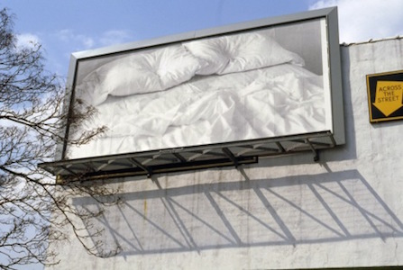

Untitled (billboard of an empty bed) is a stark, black-and-white image of the rumpled sheets and pillows of an unmade bed. The depression in the center of each pillow, suggesting a recent presence, conveys a profound sense of intimacy.
But this scenario is in jarring contrast to its public location—on a billboard. First exhibited on the streets of Manhattan, this evocation of absent bodies soon came to define all of Felix Gonzales-Torres’ work up until his death in 1996 from AIDS-related causes.